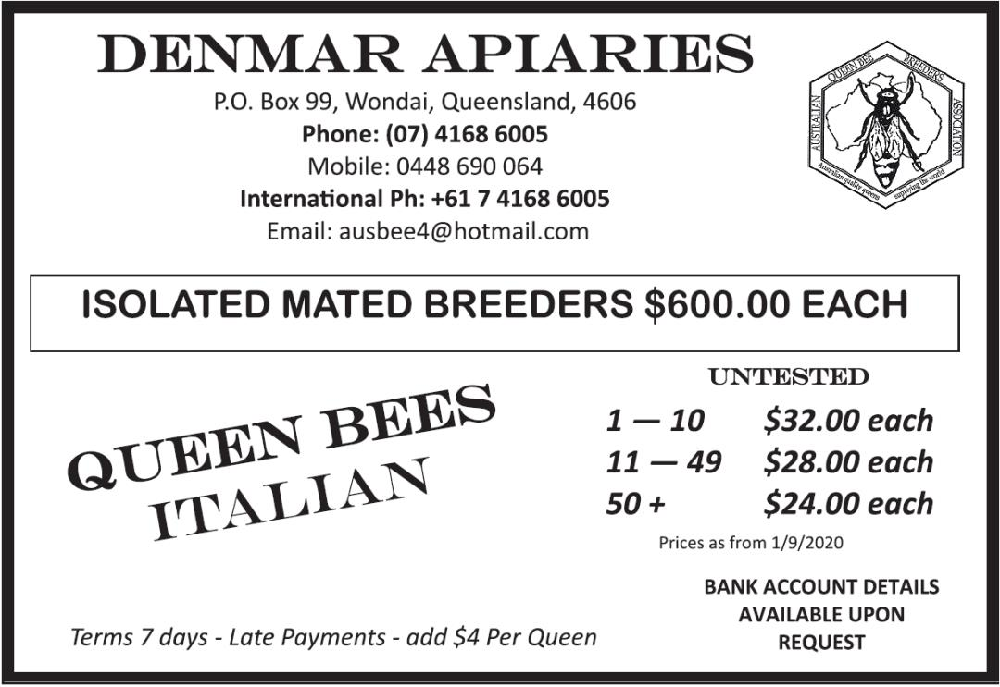

Bees avoid “too much of a good thing” by balancing nutrients in pollen.
Bees are known for their intelligence, but a new study led by the University of Oxford has revealed a previously unknown nutritional skill: they can adjust how much they eat in response to the balance of essential amino acids in their food. This helps them avoid the potential toxic effects of over-consuming certain amino acids when pollen provides a poor nutritional match for their needs.
The findings, published in Current Biology, show that many pollen sources do not provide bees with an ideal balance of essential amino acids: the protein building blocks that animals cannot make for themselves and must obtain from their diet. The results have important implications for farmers, landowners, conservationists and gardeners seeking to support healthy pollinator populations.
Bees feed almost exclusively on nectar and pollen from flowers. Nectar provides mainly sugar, while pollen is their main source of protein. But unlike nectar, pollen is not produced primarily as a food reward for pollinators: it is the male reproductive material of plants. This means its nutrient balance may not always match what bees need to grow, survive and reproduce.
To investigate this, the researchers compared the essential amino acid profiles of honey bee tissues with that of pollen from 99 UK flowering plant species across 26 plant families. They then created artificial diets that either replicated the amino acid profiles of different pollen sources or honey bee tissues, and fed these to newly emerged worker honey bees in controlled laboratory experiments.
The researchers found that most pollen sources tested were a poor match for the essential amino acid profile of bee tissues. Bees fed diets that more closely matched their own tissue composition (rather than pollen) ate more, gained more body mass and consumed a more protein-rich balance of food.
The researchers suspected that this response was linked to histidine, an essential amino acid that bees need only in small amounts. To test this, they fed bees artificial diets where histidine was either high or low relative to branched-chain amino acids (such as leucine and isoleucine) that are important for bee growth and development. When histidine was relatively high, the bees ate less food overall, including both protein and carbohydrate.
The team suggests this may reflect a post-digestive feedback mechanism that helps bees avoid the potential toxic effects of over-consuming particular amino acids, rather than simply eating more pollen to make up for nutritional shortfalls. However, honey bees appear to have developed a strategy to ensure their developing young obtain a balanced diet. Read the full article here.
